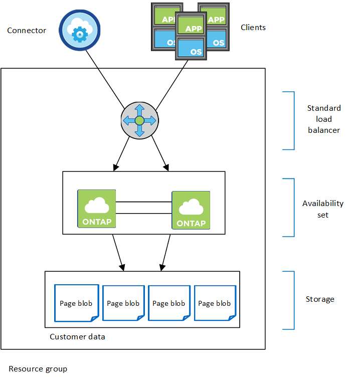
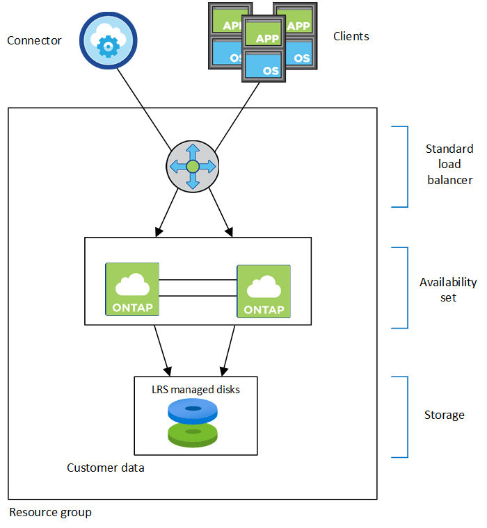
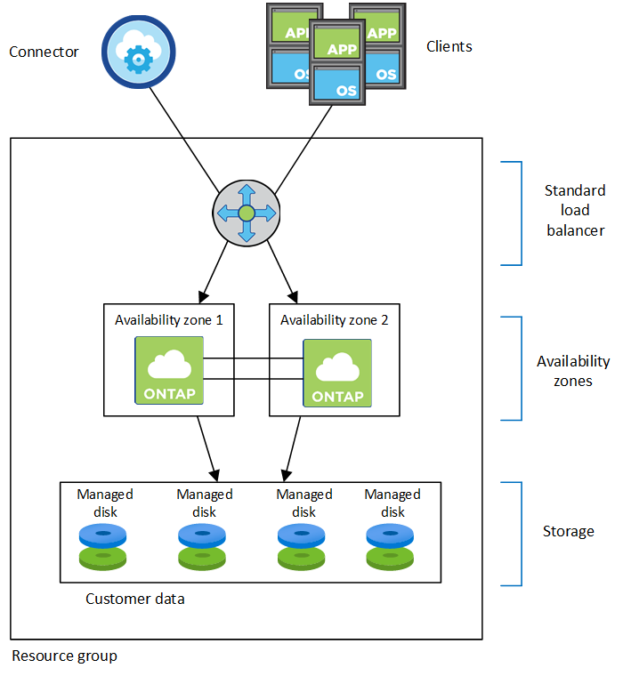

发行说明
发行说明
Azure 中的高可用性对
 建议更改
建议更改
Cloud Volumes ONTAP 高可用性（ High Availability ， HA ）对可在云环境发生故障时提供企业级可靠性和持续运行。在 Azure 中，存储在两个节点之间共享。
HA 组件
HA单可用性区域配置、包含页面blob
Azure中的Cloud Volumes ONTAP HA页面Blob配置包括以下组件：

请注意以下有关BlueXP为您部署的Azure组件的信息：
- Azure 标准负载平衡器
-
负载平衡器管理传入 Cloud Volumes ONTAP HA 对的流量。
- 可用性集
-
Azure 可用性集是 Cloud Volumes ONTAP 节点的逻辑分组。可用性集可确保节点位于不同的故障和更新域中，以提供冗余和可用性。 "在 Azure 文档中了解有关可用性集的更多信息"。
- Disks
-
客户数据位于高级存储页面 Blobs 上。每个节点都可以访问另一节点的存储。此外，还需要为提供更多存储 "启动，根和核心数据"。
- 存储帐户
-
-
受管磁盘需要一个存储帐户。
-
高级存储页面 Blobs 需要一个或多个存储帐户，因为已达到每个存储帐户的磁盘容量限制。
-
要将数据分层到 Azure Blob 存储，需要一个存储帐户。
-
从Cloud Volumes ONTAP 9.7开始、BlueXP为HA对创建的存储帐户为通用v2存储帐户。
-
在创建工作环境时，您可以启用从 Cloud Volumes ONTAP 9.7 HA 对到 Azure 存储帐户的 HTTPS 连接。请注意，启用此选项可能会影响写入性能。创建工作环境后，您无法更改此设置。
-
使用共享受管磁盘的HA单可用性区域配置
在共享受管磁盘上运行的Cloud Volumes ONTAP HA单可用性区域配置包括以下组件：

请注意以下有关BlueXP为您部署的Azure组件的信息：
- Azure 标准负载平衡器
-
负载平衡器管理传入 Cloud Volumes ONTAP HA 对的流量。
- 可用性集
-
Azure 可用性集是 Cloud Volumes ONTAP 节点的逻辑分组。可用性集可确保节点位于不同的故障和更新域中，以提供冗余和可用性。 "在 Azure 文档中了解有关可用性集的更多信息"。
- Disks
-
客户数据驻留在本地冗余存储(LRS)管理的磁盘上。每个节点都可以访问另一节点的存储。此外，还需要为提供更多存储 "启动、根、配对根、核心和NVRAM数据"。
- 存储帐户
-
存储帐户用于基于受管磁盘的部署、以处理诊断日志并分层到Blob存储。
HA多可用性区域配置
Azure中的Cloud Volumes ONTAP HA多可用性区域配置包括以下组件：

请注意以下有关BlueXP为您部署的Azure组件的信息：
- Azure 标准负载平衡器
-
负载平衡器管理传入 Cloud Volumes ONTAP HA 对的流量。
- 可用性区域
-
两个Cloud Volumes ONTAP 节点部署在不同的可用性区域中。可用性区域可确保节点位于不同的故障域中。 "在Azure文档中了解有关适用于受管磁盘的Azure分区冗余存储的更多信息"。
- Disks
-
客户数据驻留在分区冗余存储(ZRS)管理的磁盘上。每个节点都可以访问另一节点的存储。此外，还需要为提供更多存储 "启动、根、配对节点根和核心数据"。
- 存储帐户
-
存储帐户用于基于受管磁盘的部署、以处理诊断日志并分层到Blob存储。
RPO 和 RTO
HA 配置可保持数据的高可用性，如下所示：
-
恢复点目标（ RPO ）为 0 秒。
您的数据在传输过程中不会丢失数据。 -
恢复时间目标(Recovery Time目标、Recovery Time目标、Recovery Time目标、Recovery Time目标、Recovery Time目标、Recovery
如果发生中断、数据应在120秒或更短时间内可用。
存储接管和恢复
与物理 ONTAP 集群类似， Azure HA 对中的存储在节点之间共享。通过连接到配对节点的存储，可以使每个节点在发生 takeover 时访问另一个节点的存储。网络路径故障转移机制可确保客户端和主机继续与正常运行的节点进行通信。当节点恢复联机时，配对节点 gives back storage 。
对于 NAS 配置，如果发生故障，数据 IP 地址会自动在 HA 节点之间迁移。
对于 iSCSI 、 Cloud Volumes ONTAP 使用多路径 I/O （ MPIO ）和非对称逻辑单元访问（ ALUA ）来管理活动优化路径和非优化路径之间的路径故障转移。

|
有关哪些特定主机配置支持 ALUA 的信息，请参见 "NetApp 互操作性表工具" 以及适用于您的主机操作系统的《 Host Utilities 安装和设置指南》。 |
默认情况下，存储接管，重新同步和交还都是自动的。无需用户操作。
存储配置
您可以将 HA 对用作主动 - 主动配置、两个节点都将数据提供给客户端、也可以用作主动 - 被动配置、仅当被动节点接管了主动节点的存储时才响应数据请求。